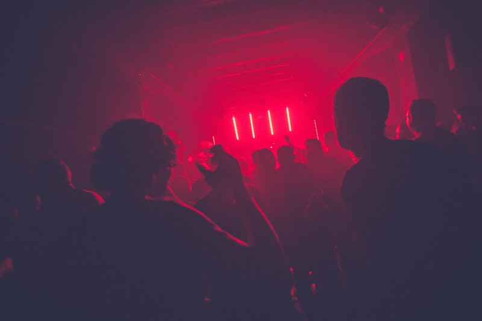
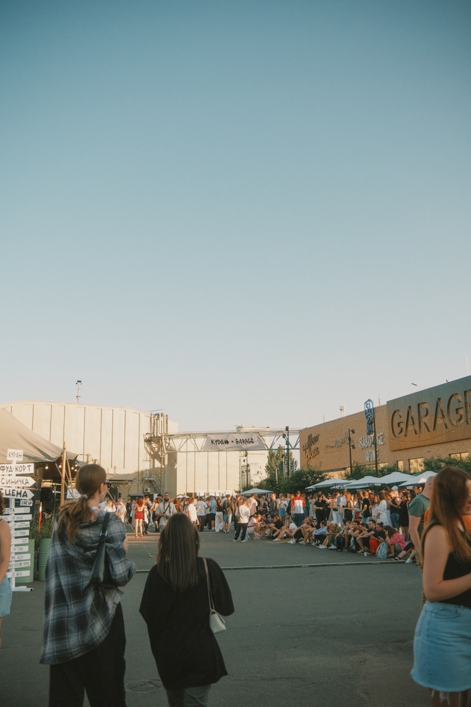

Temat numeru17 sierpnia 2026 · 8 min czytania
Nowa fala poznańskich piwnic. Gdzie tańczy się do rana
Sześć klubów, które w ostatnim roku przedefiniowały nocną scenę miasta — i ludzie, którzy je prowadzą.

Sześć klubów, które w ostatnim roku przedefiniowały nocną scenę miasta — i ludzie, którzy je prowadzą.
Od piwnicznych jam sessions po sceny festiwalowe — mapa miejsc, w których usłyszysz najlepsze składy improwizowane.

O tym, jak układa się line-up na jesień, dlaczego mniejsze sceny wygrywają z arenami i co decyduje o powrocie zespołu.

Galerie miejskie otwierają sezon wcześniej niż zwykle. Wybraliśmy ekspozycje, na które warto zaplanować osobne popołudnie.
Najczęściej czytane teksty ostatnich siedmiu dni
Lista miejsc, które kończą pracę razem z klubami.
6 min · JedzenieOd piwnicznych jam sessions po sceny festiwalowe.
6 min · MuzykaKluby testują wejścia na godziny.
5 min · NightlifeSześć klubów, które przedefiniowały nocną scenę.
8 min · Nightlife
Wspólna oferta ośmiu poznańskich klubów. Sprzedaż do 31 sierpnia.
Zobacz karnetDziały redakcyjne — od nocnej sceny do kuchni
Artykuły, wideo i wydarzenia dopasowane do Poznania
Muzycy dzielą sprzęt i publiczność. Sprawdziliśmy, jak to działa w praktyce i kto płaci za wieczór.
Zabraliśmy kamerę na ostatnią próbę zespołu przed tournée po sześciu miastach.
Aula UAM, Wieniawskiego 1 · 20:00
Partner platformy testuje wejścia czasowe w sześciu klubach. Sprawdź, gdzie już działają.
Trzy premiery, jedna scena i budżet mniejszy niż rok temu. Rozmowa z dyrekcją artystyczną.
O pierwszych imprezach w garażu, sprzęcie z drugiej ręki i publiczności, która wraca po siedmiu latach.
Kluby testują wejścia na godziny. Sprawdziliśmy, komu to się opłaca.
eventapp · Blog — widok listy „Odkryj". Wersja do druku strony głównej bloga (Poznań, sierpień 2026).